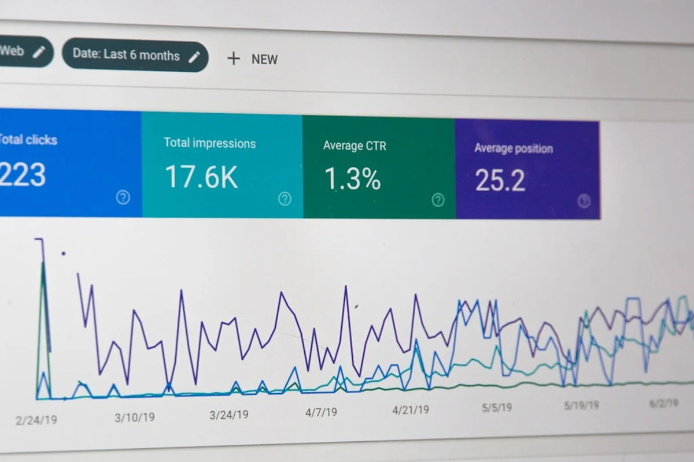
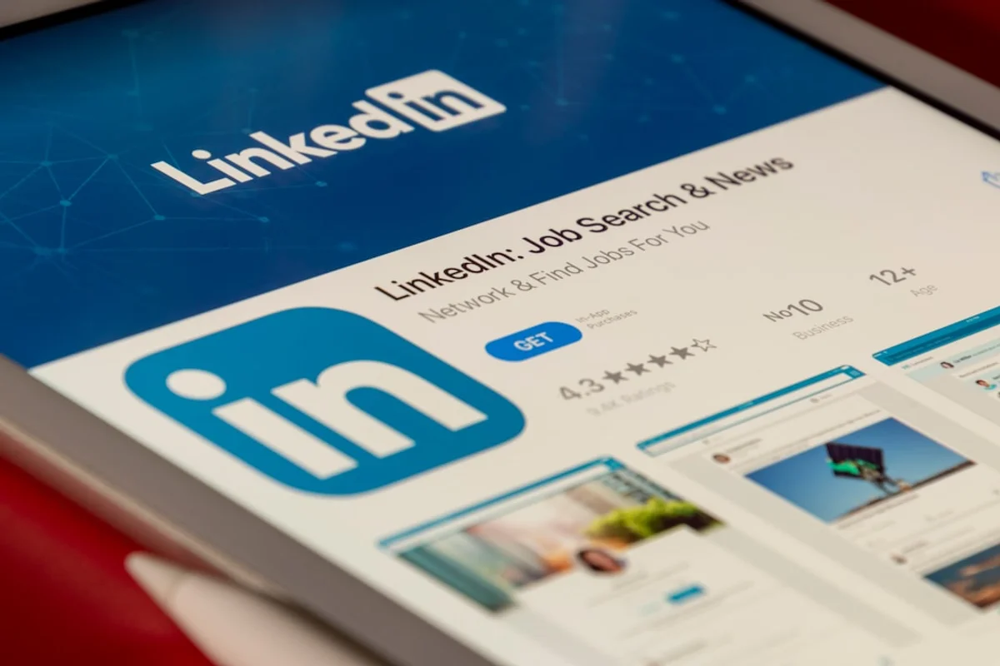

Introduction
If you have noticed your LinkedIn posts hitting a wall lately, you are not imagining it. The LinkedIn algorithm reach dropped in 2026 for a significant portion of creators, and the platform has quietly confirmed several policy and ranking shifts that explain the slump. Threads on LinkedIn itself, Reddit's r/marketing, and creator newsletters from analysts like Social Media Examiner have all flagged the same pattern: impressions falling between 30% and 60% for accounts that were performing perfectly well in late 2025.
The timing is not random. LinkedIn has been under growing pressure from Microsoft to monetise more aggressively while simultaneously dealing with a credibility crisis around low-quality AI-generated content flooding feeds. The result is an algorithm that has been tightened considerably, rewarding genuine professional authority and punishing content that looks manufactured, recycled, or engagement-baited.
This piece breaks down what changed structurally in the LinkedIn algorithm in 2026, which types of creators were hit hardest, and the concrete fixes that data and early adopters suggest are actually working. No vague advice about "being authentic." Real levers, real numbers, real context.
What Actually Changed in the LinkedIn Algorithm in 2026
LinkedIn did not send a press release. But between January and April 2026, a cluster of observable changes reshaped how content is ranked and distributed. Based on public statements from LinkedIn engineers, third-party analytics from tools like Taplio and Shield Analytics, and aggregated data from creator communities, the following shifts are now fairly well-documented.
1. Topic authority scoring became a primary signal. The algorithm now cross-references what you post about with your actual professional history: your current title, past roles, endorsements, and the topics your network engages with most on your profile. A recruiter posting daily about venture capital valuations will see their distribution throttled. A CFO posting about the same subject will not. This is the single biggest structural change of 2026, and it explains why many generalist creators saw the sharpest drops.
2. AI content detection was rolled out at scale. Following industry-wide pressure (Instagram introduced its own AI Creator label in May 2026), LinkedIn began flagging posts that its detection models classify as predominantly AI-generated. Flagged posts are not removed, but their organic distribution is significantly reduced, sometimes by up to 70% according to early data from Shield Analytics.
3. The "dwell time" signal was weighted more heavily. LinkedIn has been testing dwell time as a ranking signal since 2023, but in 2026 it appears to have become a primary factor alongside likes and comments. Posts that people scroll past quickly are ranked lower in subsequent distribution waves, regardless of how many reactions they accumulate.
4. External links were further penalised. Posts containing links to external websites now receive significantly reduced initial distribution. This was already the case before 2026, but the penalty appears to have sharpened. LinkedIn wants users to stay on LinkedIn.
5. Newsletter and document posts gained ranking priority. LinkedIn's own native formats, particularly newsletters, PDF carousels (called Documents), and native video with captions, are now receiving preferential treatment in the algorithm. This is a clear commercial incentive: LinkedIn wants creators to build audiences inside its ecosystem rather than funnel followers out.
Who Got Hit Hardest and Why
Not every creator saw the same drop. The damage was concentrated in specific profiles.
Generalist "thought leaders" who posted broadly across topics like productivity, leadership, motivation, and business strategy were hit disproportionately hard. Without a strong topic authority signal anchoring their content to a recognised professional niche, their posts now receive weaker initial seeding to the algorithm's first distribution group (typically around 200 to 500 connections and followers).
Creators relying heavily on AI-generated text faced the sharpest and most sudden drops, often between April and May 2026. Accounts posting polished, structured, clearly GPT-style text with predictable formatting patterns were the most affected. Interestingly, using AI as a drafting tool and then heavily editing appears to reduce the detection signal considerably.
Engagement-bait formats also suffered. Posts ending with phrases like "Tag someone who needs to hear this" or "Agree or disagree?" have been deprioritised as the algorithm now distinguishes between comments that are substantive (several words, a genuine reply) and comments that are low-signal (single words, emoji reactions). Only substantive comments appear to boost distribution in 2026.
High-frequency low-effort posters faced what several analysts describe as a "quality tax." Posting more than once per day without strong engagement on each post now appears to actively suppress future posts from the same account, rather than simply not helping.
Conversely, creators who post in a clearly defined niche, have work experience that matches their content topics, and generate genuine back-and-forth comment threads saw their reach hold steady or even grow during the same period.

The Contrarian Take: LinkedIn's Reach Was Never Real for Most Creators
Here is the angle most marketing commentators are skipping over: for a large proportion of the creators who experienced a "drop" in 2026, the prior reach numbers were artificially inflated by LinkedIn's own growth-hacking decisions in 2023 and 2024, when the platform was aggressively pushing creator content to attract more posting behaviour.
In other words, many accounts were not "losing" organic reach they had earned. They were returning to a baseline after a period of algorithmic subsidy. LinkedIn handed out reach generously between 2022 and 2024 to build creator momentum. Now that creator posting volume is healthy, the platform can afford to be selective.
This matters for how you respond. If your strategy in 2023 or 2024 was built on reach that the algorithm was gifting you rather than earned authority and genuine engagement, no technical fix will restore what you had. The structural answer is not a hack. It is rebuilding a content strategy around what the 2026 algorithm actually rewards: deep topic relevance, professional credibility, and dwell time.
This is uncomfortable for creators who built audiences and perhaps client pipelines on inflated metrics. But it is more useful to understand this clearly now than to chase reach optimisation on a foundation that was always temporary.
7 Data-Backed Fixes for Creators and Brands
These are not hypothetical suggestions. They are based on observed performance data from creator analytics tools, LinkedIn's own Help and Engineering blog posts, and the documented results of creators who have publicly reported their recovery metrics.
1. Anchor every post to your professional authority zone. Before posting, ask: does my LinkedIn profile credibly connect me to this topic? If the answer is no, either add the relevant experience to your profile or shift the framing of the post so it enters through a topic you are credibly associated with. Topic authority scoring is a hard limit now, not a soft suggestion.
2. Remove external links from the post body. Put any link in the first comment instead. While LinkedIn has not officially confirmed this restores full reach, data from Taplio's 2026 benchmarks consistently shows posts with links in comments outperforming equivalent posts with links in the body by 40% or more on average impressions.
3. Post native video with burned-in captions. LinkedIn's native video format (uploaded directly, not linked from YouTube) is receiving strong algorithmic priority in 2026. Captions matter because they increase dwell time among mobile users who scroll with sound off, a majority on most mobile platforms.
4. Use Documents (PDF carousels) for complex ideas. Multi-slide PDF posts, known as Documents on LinkedIn, generate among the highest dwell time of any format because readers swipe through multiple frames. They also perform well in the authority-signal analysis because the depth of content is harder to fake than a three-sentence text post.
5. Respond to every comment within the first 60 minutes. The algorithm's first distribution wave runs approximately 60 minutes after posting. Substantive engagement (your replies, plus commenter replies) during this window signals quality to the algorithm before the second wave of distribution is determined. Set a reminder and protect that first hour.
6. Reduce posting frequency and increase post depth. Data from Shield Analytics suggests that accounts posting 3 times per week with high engagement per post now consistently outperform accounts posting daily with moderate engagement. Quality-to-frequency ratio has shifted as a ranking consideration.
7. Activate LinkedIn Newsletter for long-form content. LinkedIn Newsletters are distributed via notification to subscribers, bypassing the main feed algorithm entirely for that initial send. Building even a small newsletter subscriber base (500 to 1,000 is a realistic 6-month goal for an active creator) creates an algorithm-independent distribution channel that supplements feed reach.

Benchmarks: What Good LinkedIn Reach Actually Looks Like in 2026
Part of the panic around the reach drop comes from creators comparing 2026 numbers to the inflated 2023 and 2024 figures. Here is a clearer calibration based on current data.
- Impressions per post for accounts with under 5,000 followers: A healthy post in a relevant niche now reaches between 800 and 2,500 impressions. Previously this figure was commonly 3,000 to 6,000.
- Impressions per post for accounts with 5,000 to 25,000 followers: A well-performing post reaches 3,000 to 12,000 impressions. In 2023 this tier commonly saw 10,000 to 30,000.
- Engagement rate benchmark: A post achieving 2% to 4% engagement (reactions plus comments divided by impressions) is now considered strong. Anything above 4% is exceptional.
- Document posts: Consistently outperform text posts by 2x to 3x on dwell time and by approximately 1.5x on reach, according to Taplio's April 2026 benchmark report.
- Native video: Posts with native video that run between 60 and 180 seconds are seeing the strongest distribution boost in 2026, with some creators reporting 2x to 4x the impressions of equivalent text posts.
These numbers are not fixed. LinkedIn adjusts its algorithm continuously. But they serve as a realistic reference point for setting expectations and diagnosing whether a specific account's underperformance is structural or content-related.
What LinkedIn Has Said Publicly (and What It Has Not)
LinkedIn's official communications on its algorithm changes have been characteristically opaque. The platform's Engineering Blog published a broad post in early 2026 discussing "relevance and quality improvements" to feed ranking, which is corporate language for the changes described in this article. Specific signals, weights, or thresholds were not disclosed.
What LinkedIn has explicitly stated: the platform prioritises "knowledge and advice" content from people with demonstrated expertise in the relevant field. It has also confirmed that it uses signals beyond engagement to assess content quality, which is the public-facing description of the dwell time weighting and authority scoring.
What LinkedIn has not confirmed: the exact penalty applied to AI-generated content, the precise mechanism of the external link penalty, or the degree to which posting frequency affects per-post distribution. These are inferred from third-party data and creator-reported observations, not official disclosures.
Creators who want to stay ahead should monitor Social Media Today and LinkedIn's own creator resources page for updates, as changes often appear in policy documentation before they surface in analytics dashboards.
Final Thoughts
The LinkedIn algorithm reach drop of 2026 is real, measurable, and unlikely to reverse for the creators most severely affected unless their underlying content strategy changes. The platform has moved firmly toward rewarding professional authority, genuine conversation, and native content depth. That is not necessarily a bad thing for the long-term quality of the platform, even if it is painful for creators who built routines around a more permissive algorithm.
The creators already recovering are not the ones who found clever workarounds. They are the ones who looked honestly at their topic authority, rebuilt their content around depth rather than volume, and invested in native formats like Documents and video. The algorithm is a reflection of what LinkedIn wants to be: a credibility-first professional network, not another content firehose.
If this breakdown helped clarify what happened to your reach and where to focus next, sharing it with another creator navigating the same questions would go a long way.
Frequently Asked Questions
Why did my LinkedIn reach suddenly drop in 2026?
The most common reasons are the new topic authority scoring (the algorithm now checks whether your professional background matches the subject of your posts), the increased penalty for AI-generated content, and LinkedIn's tightened stance on external links in post bodies. Many creators also experienced a return to baseline after artificially inflated reach during LinkedIn's growth push in 2023 and 2024.
Does putting a link in the comments instead of the post actually help LinkedIn reach?
Yes, based on third-party analytics data from tools like Taplio and Shield Analytics. Posts with links in the first comment consistently outperform equivalent posts with links in the body, with some benchmarks showing 40% or more additional impressions. LinkedIn's algorithm penalises posts that it believes will take users off the platform.
How often should I post on LinkedIn in 2026 to maximise reach?
Data from Shield Analytics suggests 3 posts per week with high engagement per post now outperforms daily posting with moderate engagement. The algorithm appears to apply a quality-to-frequency ratio, meaning posting too frequently with low-performing content can suppress future posts from the same account.
Is AI-generated content penalised on LinkedIn in 2026?
LinkedIn has not officially confirmed a specific AI content penalty, but third-party data strongly suggests that posts detected as predominantly AI-generated receive significantly reduced organic distribution, sometimes by up to 70%. Heavily editing AI-drafted text appears to reduce the detection signal. LinkedIn's Engineering Blog has referenced 'quality improvements' that align with AI content filtering.
What LinkedIn content format gets the best reach in 2026?
Native video (uploaded directly to LinkedIn, not linked from YouTube) between 60 and 180 seconds is currently the strongest performing format for reach. PDF carousels (called Documents) generate the best dwell time and outperform text posts by roughly 2x to 3x on that metric. LinkedIn Newsletters bypass the main feed algorithm entirely for subscribers, making them a valuable algorithm-independent channel.
How long does it take to recover LinkedIn reach after a drop?
Creators who have documented their recovery after implementing authority-aligned content strategies, reduced posting frequency, and native format adoption report seeing meaningful improvement within 4 to 8 weeks. There is no instant fix. The algorithm reassesses accounts over time based on sustained signals, not a single high-performing post.